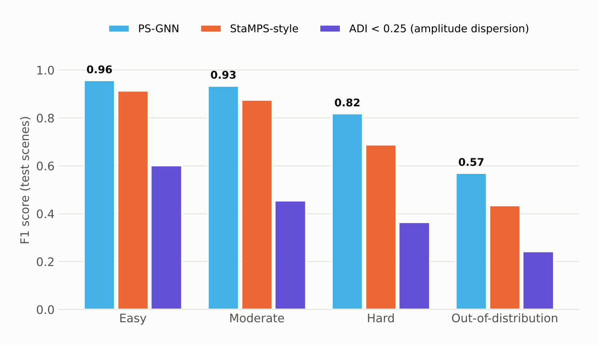
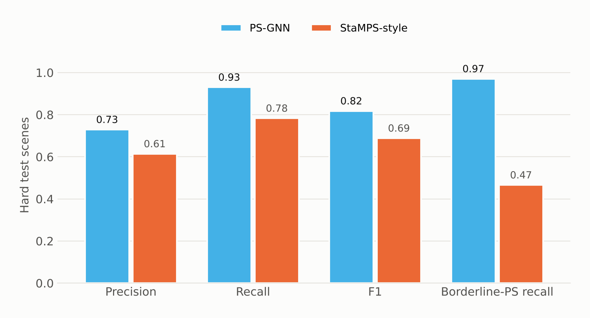
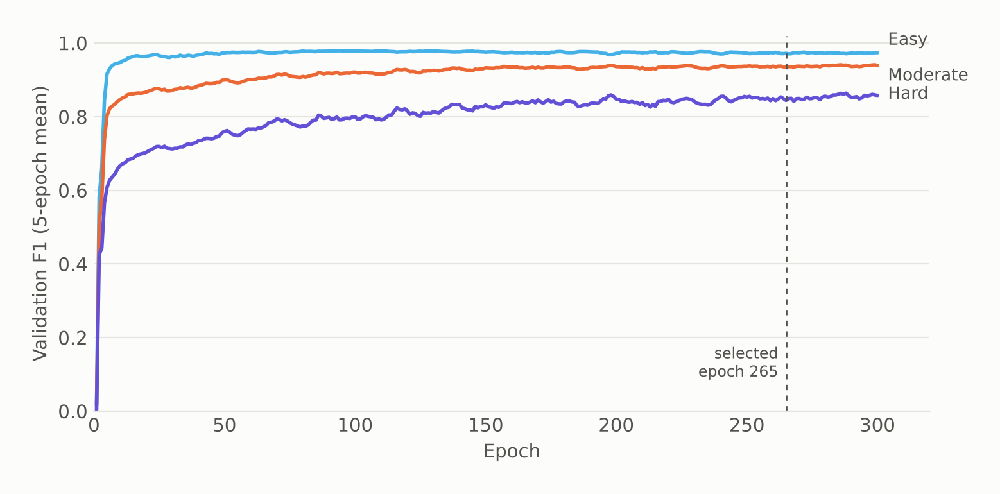

Project aim
Select persistent scatterers, the stable radar targets PS-InSAR measures, more accurately than amplitude-dispersion and StaMPS-style thresholds, especially in the noisy, borderline cases where classical rules either miss real scatterers or accept clutter.
- 0.82 vs 0.69F1 on hard test scenes vs StaMPS-style
- 0.97Borderline-PS recall on hard scenes (StaMPS-style 0.47)
- 0.96F1 on easy test scenes
- 274,920Parameters; trains on one GPU in 1.25 GB
Classical PS-InSAR picks stable radar targets one pixel at a time with fixed thresholds. PS-GNN looks at each pixel in the context of its neighbours, and on hard scenes it beats the StaMPS-style baseline on every metric.
What is new
- 1
Selection as graph classification
Each pixel's decision uses its neighbours' evidence through graph convolution, attention and neighbourhood aggregation, in place of a per-pixel threshold.
- 2
Physically meaningful edges
Neighbours within 50 m (10 m pixels) whose phase histories correlate at 0.4 or more, with at most 8 neighbours per node, so the graph encodes physical proximity and shared behaviour.
- 3
A 19-feature node vector
Mean and standard deviation of amplitude, ADI, skewness, kurtosis, temporal coherence, local variance, edge strength, incidence angle and a one-hot land-cover class.
- 4
Domain-randomised training with a curriculum
64 freshly generated scenes per epoch (96 × 96 px, 40 acquisitions) for 300 epochs, with difficulty ramping up, exponential-moving-average weights and model selection at epoch 265.
- 5
Calibrated, fair comparison
The decision threshold (0.575) is calibrated on validation scenes, and the classical baselines are tuned on the same data (ADI 0.22; StaMPS-style ADI 0.35 with coherence 0.60).
- 6
Physics-informed and ablated
A loss with a circular phase-stability term, a spatio-temporal ViT baseline for ablation and 5-fold spatial-block cross-validation.
Overview
Persistent-scatterer InSAR measures millimetre-scale motion at pixels whose radar response stays stable over dozens of acquisitions. Choosing those pixels is classically done one at a time, with thresholds on amplitude dispersion (ADI) and coherence. PS-GNN reframes selection as node classification on a spatial graph. Every candidate pixel is a node with 19 features; edges link neighbours within 50 m whose phase histories correlate; and a GCN → 8-head GAT → GraphSAGE network decides with the whole neighbourhood in view. It outputs a calibrated probability that each pixel is a persistent scatterer.
The challenge
Thresholds are blunt. A strict ADI cut drops genuine but noisy scatterers; a loose one floods the network with clutter; and neither uses spatial context, although real scatterers cluster on buildings and infrastructure. Reliable PS ground truth is scarce, so the model has to learn from physically modelled data and then be compared fairly against the classical methods it aims to replace, with baselines tuned on the same data.
Data & inputs
Approach
-
01
Build the candidate graph
Candidate pixels become nodes; edges connect neighbours within 50 m with phase correlation of at least 0.4, capped at 8 neighbours.
-
02
Engineer the node features
19 features per node describe amplitude statistics, temporal coherence, local texture, viewing geometry and land cover.
-
03
Train on domain-randomised scenes
Fresh synthetic SAR stacks every epoch prevent memorisation; a curriculum moves from easy to hard scenes; mixed precision and EMA weights stabilise training.
-
04
Calibrate and tune baselines
The PS-GNN threshold and the ADI and StaMPS-style thresholds are all calibrated on the same validation scenes.
-
05
Test on held-out and out-of-distribution scenes
60 held-out test scenes stratified by difficulty, plus 12 out-of-distribution scenes, with precision, recall, F1, borderline-PS recall and false-neighbour rate.
-
06
Package for reuse
The model, graph settings, thresholds and metrics ship together as a bundle with a model card that states the intended use and known limitations.
Model & training setup
| Architecture | Encoder 64 → GCN 192 → GAT 128 × 8 heads → GraphSAGE 96 → classifier 64, with skip connections |
|---|---|
| Parameters | 274,920 |
| Node features | 19 (amplitude statistics, ADI, coherence, texture, incidence angle, land cover) |
| Graph | ≤ 50 m, phase correlation ≥ 0.4, ≤ 8 neighbours, 10 m pixels |
| Training data | Domain-randomised synthetic scenes, 96 × 96 px, 40 acquisitions, 64 per epoch |
| Optimisation | Peak LR 1e-3, 6 warm-up epochs, weight decay 0.01, gradient clip 1.0, dropout 0.3 |
| Stabilisation | Mixed precision (AMP), EMA weights (0.995), class weighting, difficulty curriculum |
| Selection | Epoch 265 of 300; decision threshold 0.575 calibrated on validation |
| Compute | Single GPU, about 8 s per epoch, peak memory 1.25 GB |
Benchmark
| Scenes | PS-GNN | StaMPS-style | ADI tuned | ADI < 0.25 |
|---|---|---|---|---|
| Easy | 0.956 | 0.913 | 0.627 | 0.602 |
| Moderate | 0.934 | 0.875 | 0.460 | 0.454 |
| Hard | 0.818 | 0.688 | 0.346 | 0.364 |
| Out-of-distribution | 0.569 | 0.435 | 0.207 | 0.242 |
Figures from the run



Results
On held-out test scenes PS-GNN reaches F1 0.956 (easy), 0.934 (moderate) and 0.818 (hard), against 0.913, 0.875 and 0.688 for StaMPS-style selection and below 0.63 for amplitude-dispersion thresholds. The advantage is largest where it matters most: on hard scenes it recovers 97% of borderline scatterers, compared with 47% for StaMPS-style selection. In the evaluation's per-scene comparison it beats the StaMPS-style baseline on every easy and moderate test scene and on 95% of hard ones.
Validation
Validation and test sets generated from held-out seeds and stratified by difficulty, a separate out-of-distribution set, thresholds for every method calibrated on the same validation data, and per-scene mean and spread reported alongside pooled scores.
Limitations, stated plainly
- Trained and validated on synthetic data only. Real-scene performance is unverified until evaluated against a reference PS set, which is in progress.
- The synthetic scatterers follow a simplified physical model; real atmosphere, vegetation seasonality and sensor effects may differ.
- Out-of-distribution scenes are much harder: F1 drops to 0.569 and precision to 0.42. That is still ahead of the classical baselines (0.435 and below), but it means more false positives under distribution shift.
- Edge construction assumes about 10 m pixel spacing and a stack length similar to training.